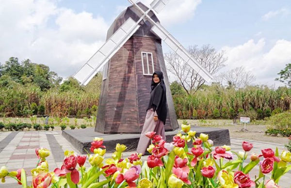

Hi Sobat, Mari berlibur di Yogyakarta, penasaran tempat rekreasi bagus apa saja yang ada di Yogya? yuk cek rekomendasi dibawah ini!
Daftar Rekomendasi Tempat Wisata di Yogyakarta
1. Kastil Soragan

Yogyakarta dikenal banyaknya bangunan keraton yang megah dan klasik, yang hampir sama dengan ciri khas bangunan di Eropa. Jika Anda berkunjung ke Kastil Soragan, Anda akan menemukan bangunan unik bernuansa abu-abu yang mirip dengan model bangunan di film Harry Potter.
Kastil yang merupakan restoran yang bangunannya menjulang tinggi, tempat ini menawarkan pemandangan hijau dari rumput hijau yang berada di halamannya. Jika Anda ingin berkunjung, lokasinya ada di Jalan Soragan Nomor 13, Ngestiharjo, Kasihan, Kembang, Bantul, DIY. Lihat Detailnya Disini...
2. Merapi Park Jogja

Pencari konten Instagram wajib banget buat mengunjungi tempat wisata yang satu ini. Merapi Park Jogja yang berlokasi di Jalan Kaliurang Km.22, Hargobinangun, Kecamatan Pakem, Kabupaten Sleman, Daerah Istimewa Yogyakarta (DIY) ini memiliki banyak bangunan menarik khas Eropa.
Seperti bangunan kincir angin khas Belanda, Brandenburg Gate Berlin, Menara Miring Pisa, Big Ben London, Menara Eiffel, Pagoda, enggak ketinggalan ada Patung Liberti. Selain itu, disini juga ada Kids Water Park, cocok banget jika Anda ingin bepergian bersama keluarga. Lihat Detailnya Disini...
3. The Lost World Castle Jogja
Dinamakan The Lost World Castle karena bangunan yang ada di tempat wisata ini memang mirip seperti benteng Takeshi, tapi banyak juga yang bilang mirip seperti tembok China.
Selain itu, di samping jalan juga dihiasi dengan bunga Sakura yang membuat Anda seolah-olah tengah berada di Jepang. Jika tertarik, lokasi wisata ini berada di Dusun Petung, Desa Kepuharjo, Kecamatan Cangkringan, Sleman. Lihat Detailnya Disini...
4. Stonehenge Cangkringan

Stonehenge Jogja atau biasa disebut Stonehenge Cangkringan mempunyai daya tarik tersendiri untuk wisatawan yang datang untuk melihatnya. Bangunan ini benar-benar dibuat mirip seperti yang ada di Stonehenge, Inggris.
Harga Tiket Masuk (HTM) Stonehenge Cangkringan cukup murah, yakni hanya Rp10.000 per orang belum termasuk parkir. Lokasi Stonehenge Cangkringan ini berada di Dusun Petung, Desa Kepuharjo, Kecamatan Cangkringan, Sleman. Lihat Detailnya Disini...
5. Heha Sky View
Tempat wisata di Jogja dengan nama Heha Sky View ini merupakan perpaduan tempat makan dengan spot foto yang memiliki latar belakang pemandangan alam dan Kota Jogja dari Ketinggian. Destinasi wisata ini terletak di Bukit Patuk, Gunungkidul.
Di Heha Sky View ini, kamu bisa berfoto di balon udara dan teras kaca yang berada di rooftop bangunannya. Jika ingin masuk ke Heha Sky View, kamu dikenai biaya Rp10.000 Lihat Detailnya Disini...